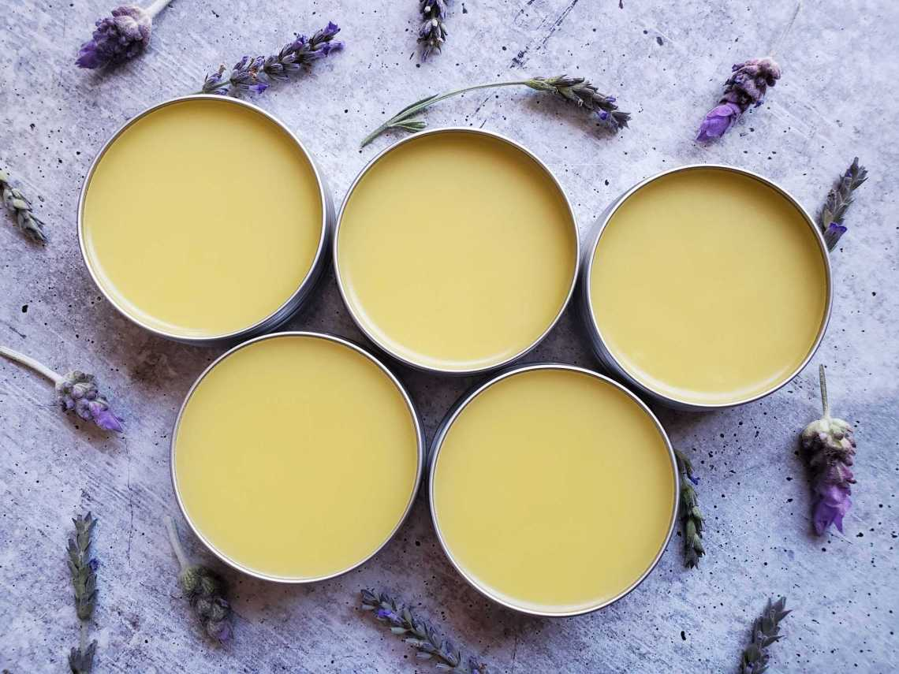
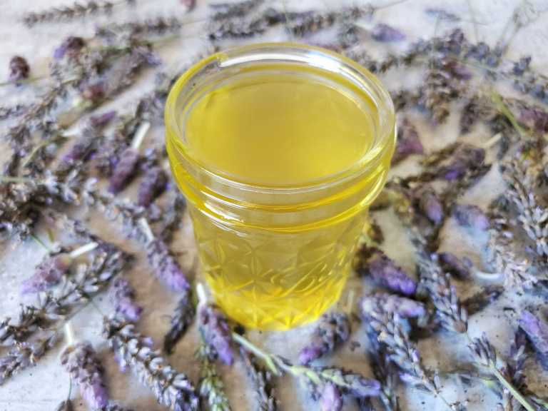
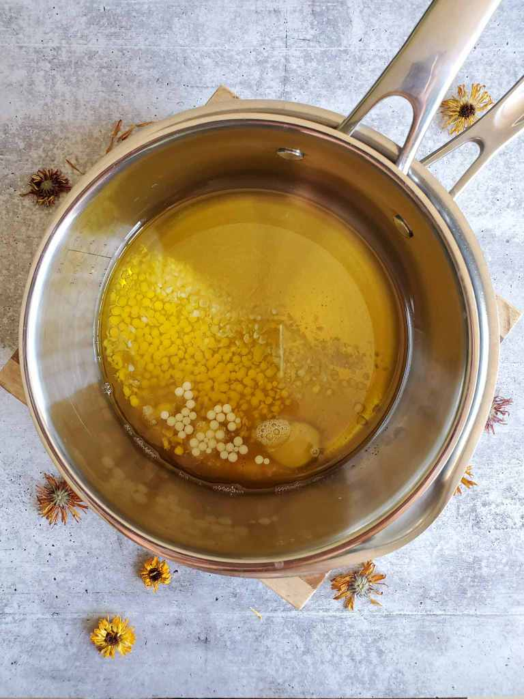
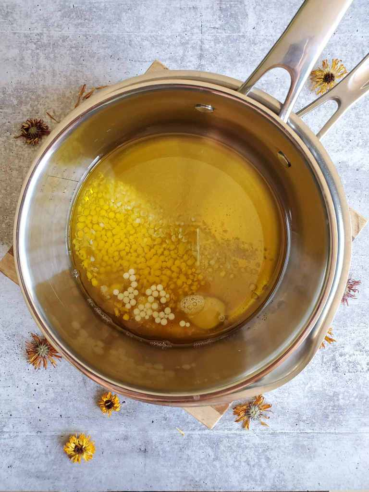

製作金盞花止痕膏
2021-05-25
濕疹問題令人困擾，「金盞花止痕膏」的製作方法天然，讓受濕疹困擾的人士有多一個選擇。有消炎抗菌及舒緩作。

由於沒有防腐劑，保存期只有半年，每次只製作小量。

準備好純天然、自家製金盞花油。
天然的原材料:蜜蠟、乳木果脂、金盞花油、薰衣草精油。
等待原材料完全溶解，便完成。
濕疹問題令人困擾，「金盞花止痕膏」的製作方法天然，讓受濕疹困擾的人士有多一個選擇。有消炎抗菌及舒緩作。
由於沒有防腐劑，保存期只有半年，每次只製作小量。
準備好純天然、自家製金盞花油。
天然的原材料:蜜蠟、乳木果脂、金盞花油、薰衣草精油。
等待原材料完全溶解，便完成。